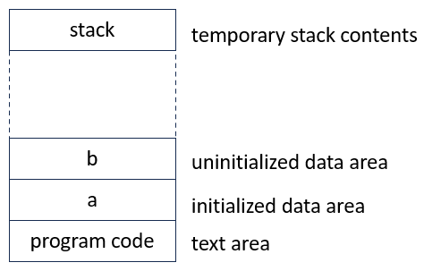
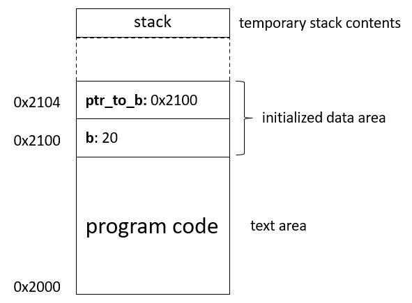
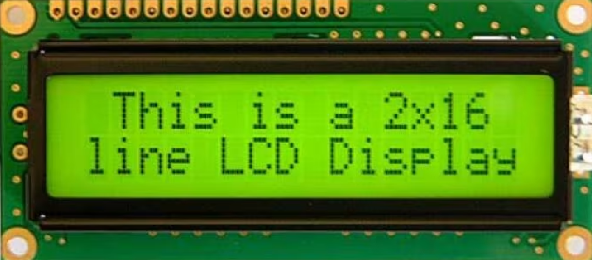
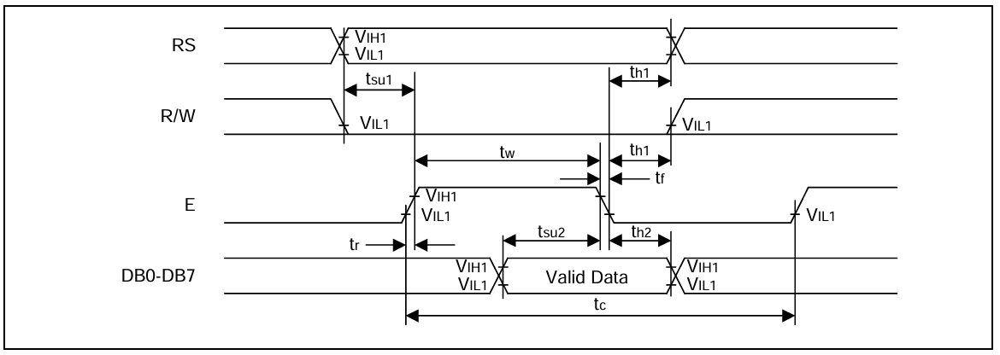

In this lesson, we will combine all the things we have learned about GPIO and C so far, and finally do some machine oriented programming and get an LED to light up, all in C. To do that, we will first have to go through the concept of pointers.
In the second part of the lecture, we will start looking at an ASCII Display which is controlled by following a specific protocol. This protocol requires precise timing, and so we will look into how the basic system timer (SysTick) works.
If you learn one thing in this lecture, let it be that a pointer is simply an address to a variable. So, before we go any further, it is high time that we start thinking about where, in memory, our variables actually reside. Consider this toy C program:
int a = 5;
int b;
int count(int v) {
if(v == 0) return 0;
return 1 + count(v - 1);
}
int main()
{
b = 20;
int c = count(a + b);
}The variables a and b are both global
variables, and their location in memory is known when the program
starts. These variables will reside in the same place in memory
throughout the execution of the program and can be read and written from
anywhere. The variable a is assigned a value when it is
declared in the global scope, and will be copied from the executable
file into the initialized data area which, in memory, will come
right after the program code:

The variable b is not initialized, and will be allocated
a space in the uninitialized data area. The required size of
this area is known when we compile our code, and it will be initialized
to 0 when the program starts.
Pay attention to the difference between the two variables:
a is assigned a value directly when it’s declared, while
b is not assigned a value until main() is run.
This has consequences for where “a” and “b” will reside in memory!
All other variables in the program are declared inside functions. These are called local variables and will only “exist” while the function is executing. Usually, this means that they will exist on the stack, which grows every time a function is called, and shrinks when the function returns. In some cases, local variables do not need to reside in memory at all, but only exist temporarily in processor registers.
In some cases, we want a variable that ”exists” throughout the
program, but that is only visible in a specific function or scope. This
is achieved using the static qualifier:
int counted_function(int v) {
// This will be initialized only once, before the program starts
static int times_the_function_has_been_called = 0;
times_the_function_has_been_called += 1;
...
}A variable declared as static will reside in the
initialized or uninitialized data area, just like a global variable, but
is only visible in the scope that it was declared (i.e., the compiler
will produce an error if we try to access it from outside the
scope).
Both global and local variables can also be qualified by the keyword
const:
const int a = 5;
int function(int v) {
const int b = 20;
...
}Using const, we are telling the compiler that this
variable will not change, and trying to assign a new value to that
variable will produce an error. const variables will reside
either in the initialized data area or in the text area (with the
program code). In either case, they may be placed in read-only
memory.
The use of pointers in C is usually the hardest part of the language for beginners to grasp. Understanding pointers is completely necessary for C to become a useful programming language, however.
A pointer is a special variable containing a memory address that points to another variable somewhere in memory. We will illustrate this in a small example:
int b = 20;
int * ptr_to_b = &b;
int main()
{
// At this line, b == 20
*ptr_to_b = 40;
// At this line, b == 40
}On the first line, we create a global integer variable called
b and initialize it with the value 20. It will
reside at the first memory location in the initialized data area when we
start the program. In this example, the address where b resides in
memory is: 0x2100.

On the next, we create another variable called ptr_to_b.
The type of this variable is int *. The asterisk here means
that ptr_to_b is of the type “pointer to integer”. This
variable resides in the next available memory in the initialized data
area, address 0x2104.
We immediately initialize this variable to be &b.
The ampersand (&) here means “the address of b”, so the value stored
at memory address 0x2104 is 0x2100.
Next, in the main function, we dereference the
variable ptr_to_b and assign a new value to it.
Dereferencing a pointer means “give me the variable that this pointer
points to”, and is done by putting an asterisk (*) in front
of the pointer 1 : *ptr_to_b = 40;
So when the compiler sees *ptr_to_b = 40 it will read
the value stored at 0x2104 and treat that as a memory address
(0x2100). It then assigns the value 40 to the integer at
memory address 0x2100. Therefore, the value of the variable
“b” (which resides at memory address 0x2100) will have
changed to 40.
This is why we call ptr_to_b a pointer; it
points to the value of variable b.
If you’re feeling lost right now, take a deep breath and try again. It is essential to understand that a pointer is a variable containing the address of another variable, of a specific type. Once that is clear, working with pointers will become second nature.
One reason that pointers are important in machine oriented programming is that they allow us to express reading and writing from arbitrary memory addresses. When we do not have an operating system and drivers, the only way for the processor to communicate with peripheral hardware is through memory load and store operations.
Let us consider another toy example:
Our program is loaded into a 32kb SRAM chip that is mapped to
addresses 0x20000000 - 0x20007FFF. Let’s say
there is also a second 128kb SRAM chip mapped to addresses
0x30000000- 0x3001FFFF. Our program needs to
read some data into memory for future processing. Since there is a lot
of data to read, this data will not fit together with our program on the
smaller SRAM, so we will put it on the larger SRAM:
char ReadValue(); // We expect this function to exist in some other file.
int main()
{
unsigned int BIG_SRAM_ADDRESS = 0x30000000;
char * output_pointer = (char *) BIG_SRAM_ADDRESS;
for(int i=0; i<44100; i++) {
*output_pointer = ReadValue();
output_pointer = output_pointer + 1;
}
}First, we store the known starting address (0x30000000)
of the large SRAM into an unsigned integer called
BIG_SRAM_ADDRESS. This variable is just a number. Then, on
the next line, we define a pointer, output_pointer, that
points to that address. Since we want to write a byte (a
char) to the address, we declare it as a
char-pointer (char *).
In the loop that follows, we read one value and place it at the
address that output_pointer points to by
dereferencing the pointer
*output_pointer = ReadValue(). On the next line, we then
increase the pointer by one (so that it points to the next byte in
memory) and repeat the process until all values have been read.
That’s enough knowledge for now. We should be able to make an LED blink at this point, so that’s what we will do. We have already written a ‘blink’ program in Lecture 4, but back then we only knew assembly. The program looked like this:
la t0, 0x40011400 # Address of CFGLR to t0
li t1, 0x02000000 # Configuration value to t1
sw t1, 0(t0) # Write the configuration to CFGLR
loop:
la t0, 0x4001140C # Address to GPIOD_OUTDR to t0
li t1, 0b1000000 # Set bit number 6 in t1
sh t1, 0(t0) # Set pin 6 to 3.3V (and all others to 0V)
la t0, 0x4001140C # Address to GPIOD_OUTDR to t0
li t1, 0b0000000 # Clear all bits in t1
sh t1, 0(t0) # Set all pins to 0V
j loop # Loop foreverIf you don’t remember how this worked, go back to the previous
lecture. Now, we want to do the same thing but in C. In the first three
lines, we write the configuration value 0x020000000 to the
GPIOD_CFGLR register, to configure it as an output pin.
We can do the same thing in C with:
unsigned int *GPIOD_CFGLR = (unsigned int *)0x40011400;
*GPIOD_CFGLR = 0x02000000;On the first line here, we create a pointer that points to an
unsigned int at address 0x40011400 (the
GPIOD_CFGLR register). On the second line, we dereference that
pointer and write the value 0x02000000 into the
register.
In fact, we don’t even have to name this pointer, and could do all of this in a single line like:
*((unsigned int*)0x40011400) = 0x02000000;But this is very hard to read for someone browsing your code, so we usually define helpful macros in a header file, or at the top of your program:
// Define a macro for CFGLR that we can use throughout the code
#define GPIOD_CFGLR *((unsigned int*)0x40011400)
// Write the value to the register
GPIOD_CFGLR = 0x02000000;Note that this is exactly the same thing. The preprocessor will just
cut’n’paste *((unsigned int*)0x40011400) whenever it sees
GPIOD_CFGLR, to the code that gets compiled is exactly what
we wrote above.
The whole blinky program could look like:
#define GPIOD_CFGLR ((unsigned int *)0x40011400)
#define GPIOD_OUTDR ((unsigned int *)0x4001140C)
void main()
{
// Configure pin 6 as output
*GPIOD_CFGLR = 0x02000000;
while(1) { // Do forever
*GPIOD_OUTDR = 0b01000000; // Turn on the LED at pin 6
*GPIOD_OUTDR = 0b00000000; // Turn off the LED at pin 6
}
}If you write this program and step through it, you will probably see that the light turns on and off. There is one more thing we have to consider to get rid of the word “probably” in the previous sentence, though.
volatile keywordOne nice thing about C is that modern compilers are extremely good at optimizing our C code until it is as fast as if we had written the assembly by hand. Using the optimizer can also be a problem, however.
void main()
{
int a = 5;
a = 6;
printf("%i\n", a);
}Let’s look at the C code above. In the while loop, we first write the value 5 to a variable, and then we immediately set it to the 6. Since we never read the variable between these two writes, the optimzer is perfectly free to remove the first write, and just set a to 6 immediately. This will not affect the result of the program.
Now look at these two lines from our little blinky program:
*GPIOD_OUTDR = 0b01000000; // Turn on the LED at pin 6
*GPIOD_OUTDR = 0b00000000; // Turn off the LED at pin 6The optimizer will reason in exactly the same way here. There is no
point in writing 0b010000000 to the variable, if we are
just going to immediately overwrite it with 0b00000000. So
it will remove the first line.
We know that this is stupid, because this “variable” is actually an output register, and everytime we write to it, some LEDs turn on or off, but the optimizer does not know that.
In fact, when the optimizer was done, the final assembly code for our program would probably be:
main: j mainSo… we have to inform the optimizer that these particular pointers
are not to be considered for these kinds of optimizations. The
volatile keyword tells the compiler that any read or write
to this variable must be performed and cannot be optimized
away.
To make our blinky program optimizer safe, we change the first two lines to:
#define GPIOD_CFGLR ((volatile unsigned int *)0x40011400)
#define GPIOD_OUTDR ((volatile unsigned int *)0x4001140C)So far, we have talked about plugging in an LED, a push-button, and simple keyboard to our microcontroller. These components are passive and instantaneously respond to the current state of the connected GPIO pins. When we plug in something more complicated, like a display, or a motor, or an old-school text terminal, we often have to follow a communication protocol. Many devices (such as the TFT display we will be using later in the course) use standardized protocols (RS-232, CAN, SPI, …), which are supported by the microcontrollers hardware. These will be discussed later, but first we will look at a simpler, active, device: the 1602 ASCII LCD display:

A standard LCD display that you would buy off-the-shelf actually consists of an LCD panel and a controller chip (often confusingly called a driver). This controller chip is itself a little microcontroller that runs code to put characters on the display. So, when you want your LCD display to show a string of text, the code you write on the MD307 has to communicate with the microcontroller in the display, according to a specific communication protocol. The protocol is usually described in the display’s datasheet.
To communicate with our ASCII display, we can write commands (such as “clear the display” or “move the cursor”) or data (the text we want to show) to it. To do this, we must follow a timing diagram that we can find in the datasheet:

This figure shows us that there are 11 signals (GPIO pins on our MD307, connected to pins on the display, via wires) that we use to communicate with the display:
Register Select (RS): This signal is used to tell the display whether it’s a command or data that we are sending/receiving.
Read/Write (R/W): This signal is used to tell the display whether we want to send data to it, or receive data from it.
Enable (E): This signal is used to initiate communication with the display
Data Lines (DB0-DB7): These 8 lines contain the command or data that we want to send (one byte).
To run a command, or read/write data from/to the display we have to follow the timing constraints given by this diagram. We prepare the device for a command by setting the E(enable) signal high, and then we execute the command by setting E low again.
The important numbers are:
ODATA register, as we have done before. This will (almost)
immediately set the corresponding pins to 0V, but it will take
some time (tsu1 = 40ns) for the electrical signal to
propagate through the display.In the workbook, you will also find the timing diagrams for reading data from the device, what commands are available, and a suggestion of how to write code that follows this timing protocol. Before you start writing anything there is a much more fundamental question that we have to answer, however: How do we tell our microcontroller to wait a specific length of time?.
The only way we can measure the passage of time on a processor is by the clock signal. As you have learned in a previous course, the CPU is pushed through its state-machine, every few nanoseconds, by a clock signal that goes up and down periodically. On the MD307, the clock frequency is 144MHz, so the time between each clock pulse is (1[sec]/144000000[Hz] ≈) 7ns.
Since we know that our microcontroller will execute approximately one instruction per clock, we can get an approximate delay with just a little for loop. If we want to wait for 1 ms, and we know that amounts to approximately (1000ns/7ns ≈) 143 clock cycles, and the loop is two instructions, we could write:
li t0, 143
loop:
addi t0, -2 # Two more instructions have been executed
bnz loop # If not zero, go again.This is not very exact, however. Firstly, due to pipelining, instruction caches, and other clever tricks that our processor might do, we do not know exactly how many clock cycles each instruction takes. Secondly, as you will learn in a future lecture, the processor is frequently interrupted by other processes, and when the CPU starts running our code again, we have no idea how many cycles have passed.
Instead, all processors come with one or more timer peripherals. These are separate modules (on the same chip) that listen to the same clock signal as the CPU does, but whose only job is to count how many cycles have passed, and provide that information to the program running on the CPU.
On the MD307, the simplest, and most commonly used, timer peripheral is called SysTick. This is the beginning of the description from the QuickGuide:
Base address:
0xE000F000
Register Block Overview
| offset | 31 | 30 | 29 | 28 | 27 | 26 | 25 | 24 | 23 | 22 | 21 | 20 | 19 | 18 | 17 | 16 | 15 | 14 | 13 | 12 | 11 | 10 | 9 | 8 | 7 | 6 | 5 | 4 | 3 | 2 | 1 | 0 | Register |
|---|---|---|---|---|---|---|---|---|---|---|---|---|---|---|---|---|---|---|---|---|---|---|---|---|---|---|---|---|---|---|---|---|---|
| 0x0 | STK_CTLR | ||||||||||||||||||||||||||||||||
| 0x4 | STK_SR | ||||||||||||||||||||||||||||||||
| 0x8 | STK_CNTL | ||||||||||||||||||||||||||||||||
| 0xC | STK_CNTH | ||||||||||||||||||||||||||||||||
| 0x10 | STK_CMPLR | ||||||||||||||||||||||||||||||||
| 0x14 | STK_CMPHR | ||||||||||||||||||||||||||||||||
System counter control register
| 31 | 30 | 29 | 28 | 27 | 26 | 25 | 24 | 23 | 22 | 21 | 20 | 19 | 18 | 17 | 16 | 15 | 14 | 13 | 12 | 11 | 10 | 9 | 8 | 7 | 6 | 5 | 4 | 3 | 2 | 1 | 0 | SWIE | INIT | MODE | STRE | STCLK | STIE | STE |
|---|
As you can see, this peripheral can be used in quite a number of
ways, but for this lecture we will only focus on the most basic use. The
two 32-bit registers STK_CNTL and STK_CNTH
make up a 64 bit counter value. That means that the counter can count up
to eighteen quantillion clock cycles, before it has to restart
from zero. (That would take about 4 thousand years, at 144MHz). Usually,
we need to count much shorter intervals than that and a long as we are
looking at periods shorter than ~30sek (2^32 clocks), we can ignore the
STK_CNTH register.
So, if all we want to do is wait for a specific time interval, t seconds, we would usually:
c that t
corresponds to:
STK_CNTL and STK_CNTH to zero.STE: Enable) in STK_CTLR.STK_CNTL has reached cIn C, waiting for one second would look like:
#define STK_CTLR ((volatile uint32_t *)0xE000F000)
#define STK_CNTLR ((volatile uint32_t *)0xE000F008)
void main()
{
*STK_CNTL = 0; // Clear counter
*STK_CTLR |= 0b101; // Start the clock and use the system clock (STCLK=1)
while(*STK_CNTLR < 144000000); // Wait for one second.
// ...
}Alternatively, we can set the compare value
(STK_CMPLR and STK_CMPHR) to the number of
clock cycles we want to wait, and then check the lowest bit of the
status register, STK_SR. This bit will flip over
to 1 when STK_CNT reaches STK_CMP:
#define STK_CTLR ((volatile uint32_t *)0xE000F000)
#define STK_SR ((volatile uint32_t *)0xE000F004)
#define STK_CNTLR ((volatile uint32_t *)0xE000F008)
#define STK_CNTHR ((volatile uint32_t *)0xE000F00C)
#define STK_CMPLR ((volatile uint32_t *)0xE000F010)
#define STK_CMPHR ((volatile uint32_t *)0xE000F014)
void main()
{
*STK_CNTLR = 0; // Clear counter
*STK_CNTHR = 0;
*STK_CMPLR = 144000000; // Set Compare value
*STK_CMPHR = 0;
*STK_CTLR |= 0b101; // Start the clock and use the system clock (STCLK=1)
while(*STK_SR == 0); // Wait for one second.
// ...
}Besides being a fairly exact way of measuring time, the SysTick timer also runs independently of the processor, so we are free to do other things while we are waiting.
In the next lecture, we will start looking at interrupts. We can ask SysTick to interrupt the processor when it has reached a specific value, and in that way we can make periodic things run completely independently from the main code.
When you start writing code for the ASCII display, you will find that some of the time intervals in that timing diagram are very short indeed. tsu, the time we need to wait after setting the RS/RW signals before setting the E signal is, for example, only 40ns. That is less than six clock cycles on our machine, and setting up SysTick might take longer than that (!).
For such small intervals, it is better to just run a few
NOP instructions, that are guaranteed to take at
least the interval we need. We can do that with inline
assembly in C, in the following way:
__asm__("nop"); // Wait at least 3 cycles
__asm__("nop");
__asm__("nop");There are some peculiarities about what happens when we perform
mathematical operations on pointers. We will illustrate why with a
little example: Let’s pretend that we know that there is a big chunk of
free memory at address 0x30000000 and we want to read a
second of music samples from somewhere (maybe from an ADC connected to
our MD307) and put them there:
float ReadValue(); // We expect this function to exist in some other file.
int main()
{
unsigned int FREE_MEM_ADDRESS = 0x30000000;
float * output_pointer = (float *) FREE_MEM_ADDRESS;
for(int i=0; i<44100; i++) {
*output_pointer = ReadValue();
output_pointer = output_pointer + 1;
}
}This code would work just fine, which might surprise you. Since we
are now reading and storing floating point values (four bytes), the
address that output_pointer points to must be increased by
4, in every iteration of the loop, but we write:
output_pointer = output_pointer + 1.
This works because of how C works with pointer arithmetic: When
adding x to a pointer that points to a value of type
y, we are telling the compiler to add
x * sizeof(y) to the address. So, for example:
int main() {
char * char_pointer = (char *) 0x20000000;
short * short_pointer = (short *) 0x2000000;
int * int_pointer = (int *) 0x20000000;
char_pointer += 1; // Now points to address 0x20000001
short_pointer += 1; // Now points to address 0x20000002
int_pointer += 1; // Now points to address 0x20000004
}This might seem strange, but actually leads to much cleaner code in many cases. You will probably end up in situations where you get this wrong, however, and one of them might be when you write something like this:
#define STK_BASE_ADDRESS 0xE000F000
#define STK_CTLR ((volatile uint32_t *)BASE_ADDRESS + 0x0)
#define STK_SR ((volatile uint32_t *)BASE_ADDRESS + 0x4)
#define STK_CNTL ((volatile uint32_t *)BASE_ADDRESS + 0x8)
#define STK_CNTH ((volatile uint32_t *)BASE_ADDRESS + 0xC)Here, when the compiler calculates the address for
STK_SR, for instance, it will first cast
BASE_ADDRESS to a uint32_t *, and
then add 4. Since it adds to a pointer to a four byte value,
the actual address will become BASE_ADDRESS + 4 * 4, which
is completely wrong. In this case, the fix is to add a parenthesis:
#define STK_SR ((volatile uint32_t *)(BASE_ADDRESS + 0x4))Since pointers are often used to point out the starting address of a list of elements in memory, and we add an offset from that address to access a specific element, there is an alternative way of writing this:
float ReadValue(); // We expect this function to exist in some other file.
int main()
{
float * free_mem_pointer = (float *) 0x30000000;
for(int i=0; i<44100; i++) {
big_sram_pointer[i] = ReadValue();
}
}The syntax ptr[i] is equivalent to
*(ptr + i); It means “Take the address that
ptr points to, increase it by the size of i
elements, and dereference that pointer”.
In the previous sections, we have seen examples of iterating through a list of variables (an array) when we know the absolute starting address of the list. Obviously, C supports allocating arrays of elements without hard-coded addresses as well:
short value_array[] = {0, 1, 2, 3, 4, 5, 6, 7, 8, 9};
int main()
{
int square_array[10];
for(int i=0; i<10; i++) {
square_array[i] = value_array[i] * value_array[i];
}
}Hopefully, the syntax is fairly intuitive from your knowledge of
other imperative languages (e.g., Java). On the first line, we declare
that we want an array of short (2 byte) elements. The
square brackets can be empty, because we immediately define the values
of the array on the same line (comma-separated within the curly
brackets). Since this array is declared outside of any function, the
memory for the array will be allocated in the initialized data
area. The compiler will count the number of elements and knows the
size of each element and allocates memory for the array before the
program starts. The variable value_array is a
const pointer (a pointer that cannot be changed) to the
first element of the allocated array.
It might be surprising, coming from higher level languages like Java, but in C an array is just a pointer to the first element.
On line 4, another array is declared. This time, no initial values are given and so the size of the array must be given within the square brackets. Since this array is local, it will be allocated on the stack and will only “exist” while the function is running. Note that, unlike higher level languages, an array in C is always of constant size, since the compiler needs to know the size when producing the code 2.
The program then enters a loop and, at each iteration, the i:th
element in the first array is squared and the result is stored in the
second array. This is done, just as in the previous sections, using the
pointers to the start of the arrays in memory (value_array
and square_array).
Let’s say we want isolate the code that squares the values of an array in a function, so we can re-use it for any array. In order for this to work, the function needs to know three things: the start addresses of both the source array and the destination array (the results), and the size of the arrays:
void SquareArray(short * src_array, int * dst_array, int num_elements) {
for(int i=0; i<num_elements; i++) {
dst_array[i] = src_array[i] * src_array[i];
}
}
int main()
{
short value_array[] = {0, 1, 2, 3, 4, 5, 6, 7, 8, 9};
int square_array[10];
SquareArray(value_array, square_array, 10);
}After the call to SquareArray on line 11, the array
square_array will contain the squares, just as before. It
is worth remembering here that we have claimed previously that
all function parameters in C are sent by value. Yet,
the contents of square_array are changed after the function
call. This is because we’re not sending the array itself as an
argument to the function. What we use instead is a pointer (the
address) to the start of the array, and the fact that the function is
receiving a copy of this pointer doesn’t matter, it still points to the
same location in memory!
In the same way, we can use pointers to variables when we want to change the value of “a parameter” (where we would have used pass by reference in other languages):
void swap(int * x, int * y) {
int temp = *y;
*y = *x;
*x = temp;
}
int main()
{
int a = 1, b = 2;
swap(&a, &b);
// a now equals 2 and b equals 1
}This example was discussed in the introduction, but bears repeating
now that you have a better grasp of what pointers are. The function
swap takes as input pointers to two integers,
which allows it to modify the values that they point at.
In C, there is no built-in or otherwise special datatype to represent
strings. Instead, a string is simply a certain number of characters
(bytes) stored contiguously in memory, i.e., an array of
char. Each character is represented by a single byte (which
can have a value between 0 and 255) and each character is assigned a
certain value. The mapping between byte values and characters is defined
in the ASCII standard3. This standard also contains some
non-printable characters. For instance, the byte value 10 means “end of
line” and the byte value 0 means “end of string”. When we want to do
operations on strings, for example compare two strings and see if they
are equal, we do this by passing around the pointer to the
first character of the strings:
int compare_string(char * str0, char * str1)
{
while(1) {
char character0 = *str0;
char character1 = *str1;
if(character0 != character1) return 0;
if(character0 == 0) return 1;
str0 += 1;
str1 += 1;
}
}This function will take the pointer to the starting characters of two strings, then look at the subsequent chars until they either differ (so the strings are not the same and we return 0), or one of them is zero (then we have reached the end of the strings and we return 1).
A string can be declared in several ways:
char * string1 = "Hello";
char string2[] = "Hello";
char string3[] = {'H', 'e', 'l', 'l', 'o', 0};
char string4[] = {72, 101, 108, 108, 111, 0};All of these declarations represent exactly the same string.
We have seen how pointers can be used to point to basic datatypes
such as int or char. In this section we will
see that we often need pointers that point to other pointers.
int main()
{
int a = 0x1234;
int * ptr_to_a = &a;
int ** ptr_to_ptr_to_a = &ptr_to_a;
}
The code and figure above show an example of declaring a pointer to another pointer. As you can see, it works exactly the same as creating a pointer for any other type:
int ** ptr_to_ptr_to_a = &ptr_to_a; The type of a “pointer to a pointer to an integer” is
int **, and to get the address of a pointer, we use the
& character just as before.
Let’s revisit the example of a swap function one more
time, but this time we want to swap two pointers:
void swap(char ** x, char ** y) {
char * temp = *y;
*y = *x;
*x = temp;
}
int main()
{
char * name0 = "Chimpanzee";
char * name1 = "Bonobo";
swap(name0, name1);
// name0 now points to "Bonobo" and name1 to "Chimpanzee"
}The variables name0 and name1 are both
pointers to the places in memory where two text strings start.
We want to swap these two pointers, so that name0 points to
the start of the string “Bonobo” and name1 points to the
start of the string “Chimpanze” (without actually changing any of the
strings).
Just as in the previous swap example, we cannot send
name0 and name1 as parameters to the swap
function, since they will be copied to the stack and any changes will be
local to the swap function. Instead, we send pointers to
name0 and name1, which are dereferenced in the
swap function to change their respective contents.
Thus, the the parameters to the swap function are:
void swap(char ** x, char ** y)That is, x is a “pointer to a pointer to a char”. When
dereferenced we have that *x is a “pointer to a char”.
We will conclude this lecture by talking about function pointers. Just as a pointer can point to the beginning of a string of characters in memory, it can point to the beginning of a piece of code in memory (a function). This can be extremely useful as it, for instance, allows us to send a function as a parameter to another function. Let’s consider a very simple toy example:
int function(int a) {
return a + 1;
}
int main() {
int (*function_ptr)(int) = &function;
int a = (*function_ptr)(1);
}On line 5, we declare a new function pointer and assign it the address of an existing function. On line 6, we then dereference that function pointer (which gives us a function) and call that function with the parameter 1. There is really nothing new about this, a function is just another thing that we can point to, but the syntax is often quite confusing to beginners4.
A function pointer is declared as:
<return type of function> (*<name of function pointer>)(<parameters of function>)The pointer (address) to a specific function is obtained with the
& operator just as for any other data type, and that
pointer can be dereferenced to call the actual function with the
* operator, as we saw in the previous example. However,
somewhat surprisingly, it is also allowed to use the function
name itself to mean “the address of this function” and to call the
function pointer without dereferencing it. Thus, the example above
can look like:
int main() {
int (*function_ptr)(int) = function;
int a = function_ptr(1);
}This code is equivalent and arguably “prettier”, but it is less consistent with how pointers to ordinary data types work.
Let us look at a slightly more useful example of using function pointers:
int Double(int value) {
return 2 * value;
}
int Square(int value) {
return value * value;
}
void map(int (*an_operation)(int), int * items, int num_items)
{
for(int i=0; i<num_items; i++) {
items[i] = (*an_operation)(items[i]);
}
}
int main()
{
int values[] = {1, 2, 3, 4};
map(Double, values, 4); // Double every item in values
map(Square, values, 4); // Square every item in values
// values is now {4, 16, 36, 64}
}Here, we create a general function called map that takes
as input a list of items, and an operation that shall be performed on
each item. There is nothing new in this example, so go through the code
and make sure you understand how it works.
So, in a statement, the asterisk means “dereference”, but in a declaration it means “is a pointer”.↩︎
Allocating memory dynamically is possible, and common practice, when writing programs for machines with operating systems. How this works is discussed in detail in the Course Book, Chapter 6.↩︎
More info on the ASCII standard at https://en.wikipedia.org/wiki/ASCII↩︎
Okay, the syntax can be confusing to experienced programmers too.↩︎